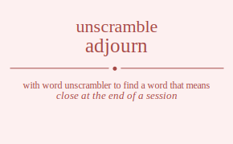

The word found after unscrambling adjourn means that close at the end of a session, break from a meeting or gathering, .

The word found after unscrambling adjourn means that close at the end of a session, break from a meeting or gathering, .
You can also find solutions for different combinations of letters in adjourn like adjourn adjounr adjorun adjornu adjonur adjonru adjuorn adjuonr adjuron adjurno adjunor adjunro adjroun adjronu adjruon adjruno adjrnou adjrnuo adjnour adjnoru adjnuor adjnuro adjnrou adjnruo adojurn adojunr adojrun adojrnu adojnur adojnru adoujrn adoujnr adourjn adournj adounjr adounrj adorjun adorjnu adorujn adorunj adornju adornuj adonjur adonjru adonujr adonurj adonrju adonruj adujorn adujonr adujron adujrno adujnor adujnro aduojrn aduojnr aduorjn aduornj aduonjr aduonrj adurjon adurjno adurojn aduronj adurnjo adurnoj adunjor adunjro adunojr adunorj adunrjo adunroj adrjoun adrjonu adrjuon adrjuno adrjnou adrjnuo adrojun adrojnu adroujn adrounj adronju adronuj adrujon adrujno adruojn adruonj adrunjo adrunoj adrnjou adrnjuo adrnoju adrnouj adrnujo adrnuoj adnjour adnjoru adnjuor adnjuro adnjrou adnjruo adnojur adnojru adnoujr adnourj adnorju adnoruj adnujor adnujro adnuojr adnuorj adnurjo adnuroj adnrjou adnrjuo adnroju adnrouj adnrujo adnruoj ajdourn ajdounr ajdorun ajdornu ajdonur ajdonru ajduorn ajduonr ajduron ajdurno ajdunor ajdunro ajdroun ajdronu ajdruon ajdruno ajdrnou ajdrnuo ajdnour ajdnoru ajdnuor ajdnuro ajdnrou ajdnruo ajodurn ajodunr ajodrun ajodrnu ajodnur ajodnru ajoudrn ajoudnr ajourdn ajournd ajoundr ajounrd ajordun ajordnu ajorudn ajorund ajorndu ajornud ajondur ajondru ajonudr ajonurd ajonrdu ajonrud ajudorn ajudonr ajudron ajudrno ajudnor ajudnro ajuodrn ajuodnr ajuordn ajuornd ajuondr ajuonrd ajurdon ajurdno ajurodn ajurond ajurndo ajurnod ajundor ajundro ajunodr ajunord ajunrdo ajunrod ajrdoun ajrdonu ajrduon ajrduno ajrdnou ajrdnuo ajrodun ajrodnu ajroudn ajround ajrondu ajronud ajrudon ajrudno ajruodn ajruond ajrundo ajrunod ajrndou ajrnduo ajrnodu ajrnoud ajrnudo ajrnuod ajndour ajndoru ajnduor ajnduro ajndrou ajndruo ajnodur ajnodru ajnoudr ajnourd ajnordu ajnorud ajnudor ajnudro ajnuodr ajnuord ajnurdo ajnurod ajnrdou ajnrduo ajnrodu ajnroud ajnrudo ajnruod aodjurn aodjunr aodjrun aodjrnu aodjnur aodjnru aodujrn aodujnr aodurjn aodurnj aodunjr aodunrj aodrjun aodrjnu aodrujn aodrunj aodrnju aodrnuj aodnjur aodnjru aodnujr aodnurj aodnrju aodnruj aojdurn aojdunr aojdrun aojdrnu aojdnur aojdnru aojudrn aojudnr aojurdn aojurnd aojundr aojunrd aojrdun aojrdnu aojrudn aojrund aojrndu aojrnud aojndur aojndru aojnudr aojnurd aojnrdu aojnrud aoudjrn aoudjnr aoudrjn aoudrnj aoudnjr aoudnrj aoujdrn aoujdnr aoujrdn aoujrnd aoujndr aoujnrd aourdjn aourdnj aourjdn aourjnd aourndj aournjd aoundjr aoundrj aounjdr aounjrd aounrdj aounrjd aordjun aordjnu aordujn aordunj aordnju aordnuj aorjdun aorjdnu aorjudn aorjund aorjndu aorjnud aorudjn aorudnj aorujdn aorujnd aorundj aorunjd aorndju aornduj aornjdu aornjud aornudj aornujd aondjur aondjru aondujr aondurj aondrju aondruj aonjdur aonjdru aonjudr aonjurd aonjrdu aonjrud aonudjr aonudrj aonujdr aonujrd aonurdj aonurjd aonrdju aonrduj aonrjdu aonrjud aonrudj aonrujd audjorn audjonr audjron audjrno audjnor audjnro audojrn audojnr audorjn audornj audonjr audonrj audrjon audrjno audrojn audronj audrnjo audrnoj audnjor audnjro audnojr audnorj audnrjo audnroj aujdorn aujdonr aujdron aujdrno aujdnor aujdnro aujodrn aujodnr aujordn aujornd aujondr aujonrd aujrdon aujrdno aujrodn aujrond aujrndo aujrnod aujndor aujndro aujnodr aujnord aujnrdo aujnrod auodjrn auodjnr auodrjn auodrnj auodnjr auodnrj auojdrn auojdnr auojrdn auojrnd auojndr auojnrd auordjn auordnj auorjdn auorjnd auorndj auornjd auondjr auondrj auonjdr auonjrd auonrdj auonrjd aurdjon aurdjno aurdojn aurdonj aurdnjo aurdnoj aurjdon aurjdno aurjodn aurjond aurjndo aurjnod aurodjn aurodnj aurojdn aurojnd aurondj auronjd aurndjo aurndoj aurnjdo aurnjod aurnodj aurnojd aundjor aundjro aundojr aundorj aundrjo aundroj aunjdor aunjdro aunjodr aunjord aunjrdo aunjrod aunodjr aunodrj aunojdr aunojrd aunordj aunorjd aunrdjo aunrdoj aunrjdo aunrjod aunrodj aunrojd ardjoun ardjonu ardjuon ardjuno ardjnou ardjnuo ardojun ardojnu ardoujn ardounj ardonju ardonuj ardujon ardujno arduojn arduonj ardunjo ardunoj ardnjou ardnjuo ardnoju ardnouj ardnujo ardnuoj arjdoun arjdonu arjduon arjduno arjdnou arjdnuo arjodun arjodnu arjoudn arjound arjondu arjonud arjudon arjudno arjuodn arjuond arjundo arjunod arjndou arjnduo arjnodu arjnoud arjnudo arjnuod arodjun arodjnu arodujn arodunj arodnju arodnuj arojdun arojdnu arojudn arojund arojndu arojnud aroudjn aroudnj aroujdn aroujnd aroundj arounjd arondju aronduj aronjdu aronjud aronudj aronujd arudjon arudjno arudojn arudonj arudnjo arudnoj arujdon arujdno arujodn arujond arujndo arujnod aruodjn aruodnj aruojdn aruojnd aruondj aruonjd arundjo arundoj arunjdo arunjod arunodj arunojd arndjou arndjuo arndoju arndouj arndujo arnduoj arnjdou arnjduo arnjodu arnjoud arnjudo arnjuod arnodju arnoduj arnojdu arnojud arnoudj arnoujd arnudjo arnudoj arnujdo arnujod arnuodj arnuojd andjour andjoru andjuor andjuro andjrou andjruo andojur andojru andoujr andourj andorju andoruj andujor andujro anduojr anduorj andurjo anduroj andrjou andrjuo androju androuj andrujo andruoj anjdour anjdoru anjduor anjduro anjdrou anjdruo anjodur anjodru anjoudr anjourd anjordu anjorud anjudor anjudro anjuodr anjuord anjurdo anjurod anjrdou anjrduo anjrodu anjroud anjrudo anjruod anodjur anodjru anodujr anodurj anodrju anodruj anojdur anojdru anojudr anojurd anojrdu anojrud anoudjr anoudrj anoujdr anoujrd anourdj anourjd anordju anorduj anorjdu anorjud anorudj anorujd anudjor anudjro anudojr anudorj anudrjo anudroj anujdor anujdro anujodr anujord anujrdo anujrod anuodjr anuodrj anuojdr anuojrd anuordj anuorjd anurdjo anurdoj anurjdo anurjod anurodj anurojd anrdjou anrdjuo anrdoju anrdouj anrdujo anrduoj anrjdou anrjduo anrjodu anrjoud anrjudo anrjuod anrodju anroduj anrojdu anrojud anroudj anroujd anrudjo anrudoj anrujdo anrujod anruodj anruojd dajourn dajounr dajorun dajornu dajonur dajonru dajuorn dajuonr dajuron dajurno dajunor dajunro dajroun dajronu dajruon dajruno dajrnou dajrnuo dajnour dajnoru dajnuor dajnuro dajnrou dajnruo daojurn daojunr daojrun daojrnu daojnur daojnru daoujrn daoujnr daourjn daournj daounjr daounrj daorjun daorjnu daorujn daorunj daornju daornuj daonjur daonjru daonujr daonurj daonrju daonruj daujorn daujonr daujron daujrno daujnor daujnro dauojrn dauojnr dauorjn dauornj dauonjr dauonrj daurjon daurjno daurojn dauronj daurnjo daurnoj daunjor daunjro daunojr daunorj daunrjo daunroj darjoun darjonu darjuon darjuno darjnou darjnuo darojun darojnu daroujn darounj daronju daronuj darujon darujno daruojn daruonj darunjo darunoj darnjou darnjuo darnoju darnouj darnujo darnuoj danjour danjoru danjuor danjuro danjrou danjruo danojur danojru danoujr danourj danorju danoruj danujor danujro danuojr danuorj danurjo danuroj danrjou danrjuo danroju danrouj danrujo danruoj djaourn djaounr djaorun djaornu djaonur djaonru djauorn djauonr djauron djaurno djaunor djaunro djaroun djaronu djaruon djaruno djarnou djarnuo djanour djanoru djanuor djanuro djanrou djanruo djoaurn djoaunr djoarun djoarnu djoanur djoanru djouarn djouanr djouran djourna djounar djounra djoraun djoranu djoruan djoruna djornau djornua djonaur djonaru djonuar djonura djonrau djonrua djuaorn djuaonr djuaron djuarno djuanor djuanro djuoarn djuoanr djuoran djuorna djuonar djuonra djuraon djurano djuroan djurona djurnao djurnoa djunaor djunaro djunoar djunora djunrao djunroa djraoun djraonu djrauon djrauno djranou djranuo djroaun djroanu djrouan djrouna djronau djronua djruaon djruano djruoan djruona djrunao djrunoa djrnaou djrnauo djrnoau djrnoua djrnuao djrnuoa djnaour djnaoru djnauor djnauro djnarou djnaruo djnoaur djnoaru djnouar djnoura djnorau djnorua djnuaor djnuaro djnuoar djnuora djnurao djnuroa djnraou djnrauo djnroau djnroua djnruao djnruoa doajurn doajunr doajrun doajrnu doajnur doajnru doaujrn doaujnr doaurjn doaurnj doaunjr doaunrj doarjun doarjnu doarujn doarunj doarnju doarnuj doanjur doanjru doanujr doanurj doanrju doanruj dojaurn dojaunr dojarun dojarnu dojanur dojanru dojuarn dojuanr dojuran dojurna dojunar dojunra dojraun dojranu dojruan dojruna dojrnau dojrnua dojnaur dojnaru dojnuar dojnura dojnrau dojnrua douajrn douajnr douarjn douarnj douanjr douanrj doujarn doujanr doujran doujrna doujnar doujnra dourajn douranj dourjan dourjna dournaj dournja dounajr dounarj dounjar dounjra dounraj dounrja dorajun dorajnu doraujn doraunj doranju doranuj dorjaun dorjanu dorjuan dorjuna dorjnau dorjnua doruajn doruanj dorujan dorujna dorunaj dorunja dornaju dornauj dornjau dornjua dornuaj dornuja donajur donajru donaujr donaurj donarju donaruj donjaur donjaru donjuar donjura donjrau donjrua donuajr donuarj donujar donujra donuraj donurja donraju donrauj donrjau donrjua donruaj donruja duajorn duajonr duajron duajrno duajnor duajnro duaojrn duaojnr duaorjn duaornj duaonjr duaonrj duarjon duarjno duarojn duaronj duarnjo duarnoj duanjor duanjro duanojr duanorj duanrjo duanroj dujaorn dujaonr dujaron dujarno dujanor dujanro dujoarn dujoanr dujoran dujorna dujonar dujonra dujraon dujrano dujroan dujrona dujrnao dujrnoa dujnaor dujnaro dujnoar dujnora dujnrao dujnroa duoajrn duoajnr duoarjn duoarnj duoanjr duoanrj duojarn duojanr duojran duojrna duojnar duojnra duorajn duoranj duorjan duorjna duornaj duornja duonajr duonarj duonjar duonjra duonraj duonrja durajon durajno duraojn duraonj duranjo duranoj durjaon durjano durjoan durjona durjnao durjnoa duroajn duroanj durojan durojna duronaj duronja durnajo durnaoj durnjao durnjoa durnoaj durnoja dunajor dunajro dunaojr dunaorj dunarjo dunaroj dunjaor dunjaro dunjoar dunjora dunjrao dunjroa dunoajr dunoarj dunojar dunojra dunoraj dunorja dunrajo dunraoj dunrjao dunrjoa dunroaj dunroja drajoun drajonu drajuon drajuno drajnou drajnuo draojun draojnu draoujn draounj draonju draonuj draujon draujno drauojn drauonj draunjo draunoj dranjou dranjuo dranoju dranouj dranujo dranuoj drjaoun drjaonu drjauon drjauno drjanou drjanuo drjoaun drjoanu drjouan drjouna drjonau drjonua drjuaon drjuano drjuoan drjuona drjunao drjunoa drjnaou drjnauo drjnoau drjnoua drjnuao drjnuoa droajun droajnu droaujn droaunj droanju droanuj drojaun drojanu drojuan drojuna drojnau drojnua drouajn drouanj droujan droujna drounaj drounja dronaju dronauj dronjau dronjua dronuaj dronuja druajon druajno druaojn druaonj druanjo druanoj drujaon drujano drujoan drujona drujnao drujnoa druoajn druoanj druojan druojna druonaj druonja drunajo drunaoj drunjao drunjoa drunoaj drunoja drnajou drnajuo drnaoju drnaouj drnaujo drnauoj drnjaou drnjauo drnjoau drnjoua drnjuao drnjuoa drnoaju drnoauj drnojau drnojua drnouaj drnouja drnuajo drnuaoj drnujao drnujoa drnuoaj drnuoja dnajour dnajoru dnajuor dnajuro dnajrou dnajruo dnaojur dnaojru dnaoujr dnaourj dnaorju dnaoruj dnaujor dnaujro dnauojr dnauorj dnaurjo dnauroj dnarjou dnarjuo dnaroju dnarouj dnarujo dnaruoj dnjaour dnjaoru dnjauor dnjauro dnjarou dnjaruo dnjoaur dnjoaru dnjouar dnjoura dnjorau dnjorua dnjuaor dnjuaro dnjuoar dnjuora dnjurao dnjuroa dnjraou dnjrauo dnjroau dnjroua dnjruao dnjruoa dnoajur dnoajru dnoaujr dnoaurj dnoarju dnoaruj dnojaur dnojaru dnojuar dnojura dnojrau dnojrua dnouajr dnouarj dnoujar dnoujra dnouraj dnourja dnoraju dnorauj dnorjau dnorjua dnoruaj dnoruja dnuajor dnuajro dnuaojr dnuaorj dnuarjo dnuaroj dnujaor dnujaro dnujoar dnujora dnujrao dnujroa dnuoajr dnuoarj dnuojar dnuojra dnuoraj dnuorja dnurajo dnuraoj dnurjao dnurjoa dnuroaj dnuroja dnrajou dnrajuo dnraoju dnraouj dnraujo dnrauoj dnrjaou dnrjauo dnrjoau dnrjoua dnrjuao dnrjuoa dnroaju dnroauj dnrojau dnrojua dnrouaj dnrouja dnruajo dnruaoj dnrujao dnrujoa dnruoaj dnruoja jadourn jadounr jadorun jadornu jadonur jadonru jaduorn jaduonr jaduron jadurno jadunor jadunro jadroun jadronu jadruon jadruno jadrnou jadrnuo jadnour jadnoru jadnuor jadnuro jadnrou jadnruo jaodurn jaodunr jaodrun jaodrnu jaodnur jaodnru jaoudrn jaoudnr jaourdn jaournd jaoundr jaounrd jaordun jaordnu jaorudn jaorund jaorndu jaornud jaondur jaondru jaonudr jaonurd jaonrdu jaonrud jaudorn jaudonr jaudron jaudrno jaudnor jaudnro jauodrn jauodnr jauordn jauornd jauondr jauonrd jaurdon jaurdno jaurodn jaurond jaurndo jaurnod jaundor jaundro jaunodr jaunord jaunrdo jaunrod jardoun jardonu jarduon jarduno jardnou jardnuo jarodun jarodnu jaroudn jaround jarondu jaronud jarudon jarudno jaruodn jaruond jarundo jarunod jarndou jarnduo jarnodu jarnoud jarnudo jarnuod jandour jandoru janduor janduro jandrou jandruo janodur janodru janoudr janourd janordu janorud janudor janudro januodr januord janurdo janurod janrdou janrduo janrodu janroud janrudo janruod jdaourn jdaounr jdaorun jdaornu jdaonur jdaonru jdauorn jdauonr jdauron jdaurno jdaunor jdaunro jdaroun jdaronu jdaruon jdaruno jdarnou jdarnuo jdanour jdanoru jdanuor jdanuro jdanrou jdanruo jdoaurn jdoaunr jdoarun jdoarnu jdoanur jdoanru jdouarn jdouanr jdouran jdourna jdounar jdounra jdoraun jdoranu jdoruan jdoruna jdornau jdornua jdonaur jdonaru jdonuar jdonura jdonrau jdonrua jduaorn jduaonr jduaron jduarno jduanor jduanro jduoarn jduoanr jduoran jduorna jduonar jduonra jduraon jdurano jduroan jdurona jdurnao jdurnoa jdunaor jdunaro jdunoar jdunora jdunrao jdunroa jdraoun jdraonu jdrauon jdrauno jdranou jdranuo jdroaun jdroanu jdrouan jdrouna jdronau jdronua jdruaon jdruano jdruoan jdruona jdrunao jdrunoa jdrnaou jdrnauo jdrnoau jdrnoua jdrnuao jdrnuoa jdnaour jdnaoru jdnauor jdnauro jdnarou jdnaruo jdnoaur jdnoaru jdnouar jdnoura jdnorau jdnorua jdnuaor jdnuaro jdnuoar jdnuora jdnurao jdnuroa jdnraou jdnrauo jdnroau jdnroua jdnruao jdnruoa joadurn joadunr joadrun joadrnu joadnur joadnru joaudrn joaudnr joaurdn joaurnd joaundr joaunrd joardun joardnu joarudn joarund joarndu joarnud joandur joandru joanudr joanurd joanrdu joanrud jodaurn jodaunr jodarun jodarnu jodanur jodanru joduarn joduanr joduran jodurna jodunar jodunra jodraun jodranu jodruan jodruna jodrnau jodrnua jodnaur jodnaru jodnuar jodnura jodnrau jodnrua jouadrn jouadnr jouardn jouarnd jouandr jouanrd joudarn joudanr joudran joudrna joudnar joudnra jouradn jourand jourdan jourdna journad journda jounadr jounard joundar joundra jounrad jounrda joradun joradnu joraudn joraund jorandu joranud jordaun jordanu jorduan jorduna jordnau jordnua joruadn joruand jorudan jorudna jorunad jorunda jornadu jornaud jorndau jorndua jornuad jornuda jonadur jonadru jonaudr jonaurd jonardu jonarud jondaur jondaru jonduar jondura jondrau jondrua jonuadr jonuard jonudar jonudra jonurad jonurda jonradu jonraud jonrdau jonrdua jonruad jonruda juadorn juadonr juadron juadrno juadnor juadnro juaodrn juaodnr juaordn juaornd juaondr juaonrd juardon juardno juarodn juarond juarndo juarnod juandor juandro juanodr juanord juanrdo juanrod judaorn judaonr judaron judarno judanor judanro judoarn judoanr judoran judorna judonar judonra judraon judrano judroan judrona judrnao judrnoa judnaor judnaro judnoar judnora judnrao judnroa juoadrn juoadnr juoardn juoarnd juoandr juoanrd juodarn juodanr juodran juodrna juodnar juodnra juoradn juorand juordan juordna juornad juornda juonadr juonard juondar juondra juonrad juonrda juradon juradno juraodn juraond jurando juranod jurdaon jurdano jurdoan jurdona jurdnao jurdnoa juroadn juroand jurodan jurodna juronad juronda jurnado jurnaod jurndao jurndoa jurnoad jurnoda junador junadro junaodr junaord junardo junarod jundaor jundaro jundoar jundora jundrao jundroa junoadr junoard junodar junodra junorad junorda junrado junraod junrdao junrdoa junroad junroda jradoun jradonu jraduon jraduno jradnou jradnuo jraodun jraodnu jraoudn jraound jraondu jraonud jraudon jraudno jrauodn jrauond jraundo jraunod jrandou jranduo jranodu jranoud jranudo jranuod jrdaoun jrdaonu jrdauon jrdauno jrdanou jrdanuo jrdoaun jrdoanu jrdouan jrdouna jrdonau jrdonua jrduaon jrduano jrduoan jrduona jrdunao jrdunoa jrdnaou jrdnauo jrdnoau jrdnoua jrdnuao jrdnuoa jroadun jroadnu jroaudn jroaund jroandu jroanud jrodaun jrodanu jroduan jroduna jrodnau jrodnua jrouadn jrouand jroudan jroudna jrounad jrounda jronadu jronaud jrondau jrondua jronuad jronuda jruadon jruadno jruaodn jruaond jruando jruanod jrudaon jrudano jrudoan jrudona jrudnao jrudnoa jruoadn jruoand jruodan jruodna jruonad jruonda jrunado jrunaod jrundao jrundoa jrunoad jrunoda jrnadou jrnaduo jrnaodu jrnaoud jrnaudo jrnauod jrndaou jrndauo jrndoau jrndoua jrnduao jrnduoa jrnoadu jrnoaud jrnodau jrnodua jrnouad jrnouda jrnuado jrnuaod jrnudao jrnudoa jrnuoad jrnuoda jnadour jnadoru jnaduor jnaduro jnadrou jnadruo jnaodur jnaodru jnaoudr jnaourd jnaordu jnaorud jnaudor jnaudro jnauodr jnauord jnaurdo jnaurod jnardou jnarduo jnarodu jnaroud jnarudo jnaruod jndaour jndaoru jndauor jndauro jndarou jndaruo jndoaur jndoaru jndouar jndoura jndorau jndorua jnduaor jnduaro jnduoar jnduora jndurao jnduroa jndraou jndrauo jndroau jndroua jndruao jndruoa jnoadur jnoadru jnoaudr jnoaurd jnoardu jnoarud jnodaur jnodaru jnoduar jnodura jnodrau jnodrua jnouadr jnouard jnoudar jnoudra jnourad jnourda jnoradu jnoraud jnordau jnordua jnoruad jnoruda jnuador jnuadro jnuaodr jnuaord jnuardo jnuarod jnudaor jnudaro jnudoar jnudora jnudrao jnudroa jnuoadr jnuoard jnuodar jnuodra jnuorad jnuorda jnurado jnuraod jnurdao jnurdoa jnuroad jnuroda jnradou jnraduo jnraodu jnraoud jnraudo jnrauod jnrdaou jnrdauo jnrdoau jnrdoua jnrduao jnrduoa jnroadu jnroaud jnrodau jnrodua jnrouad jnrouda jnruado jnruaod jnrudao jnrudoa jnruoad jnruoda oadjurn oadjunr oadjrun oadjrnu oadjnur oadjnru oadujrn oadujnr oadurjn oadurnj oadunjr oadunrj oadrjun oadrjnu oadrujn oadrunj oadrnju oadrnuj oadnjur oadnjru oadnujr oadnurj oadnrju oadnruj oajdurn oajdunr oajdrun oajdrnu oajdnur oajdnru oajudrn oajudnr oajurdn oajurnd oajundr oajunrd oajrdun oajrdnu oajrudn oajrund oajrndu oajrnud oajndur oajndru oajnudr oajnurd oajnrdu oajnrud oaudjrn oaudjnr oaudrjn oaudrnj oaudnjr oaudnrj oaujdrn oaujdnr oaujrdn oaujrnd oaujndr oaujnrd oaurdjn oaurdnj oaurjdn oaurjnd oaurndj oaurnjd oaundjr oaundrj oaunjdr oaunjrd oaunrdj oaunrjd oardjun oardjnu oardujn oardunj oardnju oardnuj oarjdun oarjdnu oarjudn oarjund oarjndu oarjnud oarudjn oarudnj oarujdn oarujnd oarundj oarunjd oarndju oarnduj oarnjdu oarnjud oarnudj oarnujd oandjur oandjru oandujr oandurj oandrju oandruj oanjdur oanjdru oanjudr oanjurd oanjrdu oanjrud oanudjr oanudrj oanujdr oanujrd oanurdj oanurjd oanrdju oanrduj oanrjdu oanrjud oanrudj oanrujd odajurn odajunr odajrun odajrnu odajnur odajnru odaujrn odaujnr odaurjn odaurnj odaunjr odaunrj odarjun odarjnu odarujn odarunj odarnju odarnuj odanjur odanjru odanujr odanurj odanrju odanruj odjaurn odjaunr odjarun odjarnu odjanur odjanru odjuarn odjuanr odjuran odjurna odjunar odjunra odjraun odjranu odjruan odjruna odjrnau odjrnua odjnaur odjnaru odjnuar odjnura odjnrau odjnrua oduajrn oduajnr oduarjn oduarnj oduanjr oduanrj odujarn odujanr odujran odujrna odujnar odujnra odurajn oduranj odurjan odurjna odurnaj odurnja odunajr odunarj odunjar odunjra odunraj odunrja odrajun odrajnu odraujn odraunj odranju odranuj odrjaun odrjanu odrjuan odrjuna odrjnau odrjnua odruajn odruanj odrujan odrujna odrunaj odrunja odrnaju odrnauj odrnjau odrnjua odrnuaj odrnuja odnajur odnajru odnaujr odnaurj odnarju odnaruj odnjaur odnjaru odnjuar odnjura odnjrau odnjrua odnuajr odnuarj odnujar odnujra odnuraj odnurja odnraju odnrauj odnrjau odnrjua odnruaj odnruja ojadurn ojadunr ojadrun ojadrnu ojadnur ojadnru ojaudrn ojaudnr ojaurdn ojaurnd ojaundr ojaunrd ojardun ojardnu ojarudn ojarund ojarndu ojarnud ojandur ojandru ojanudr ojanurd ojanrdu ojanrud ojdaurn ojdaunr ojdarun ojdarnu ojdanur ojdanru ojduarn ojduanr ojduran ojdurna ojdunar ojdunra ojdraun ojdranu ojdruan ojdruna ojdrnau ojdrnua ojdnaur ojdnaru ojdnuar ojdnura ojdnrau ojdnrua ojuadrn ojuadnr ojuardn ojuarnd ojuandr ojuanrd ojudarn ojudanr ojudran ojudrna ojudnar ojudnra ojuradn ojurand ojurdan ojurdna ojurnad ojurnda ojunadr ojunard ojundar ojundra ojunrad ojunrda ojradun ojradnu ojraudn ojraund ojrandu ojranud ojrdaun ojrdanu ojrduan ojrduna ojrdnau ojrdnua ojruadn ojruand ojrudan ojrudna ojrunad ojrunda ojrnadu ojrnaud ojrndau ojrndua ojrnuad ojrnuda ojnadur ojnadru ojnaudr ojnaurd ojnardu ojnarud ojndaur ojndaru ojnduar ojndura ojndrau ojndrua ojnuadr ojnuard ojnudar ojnudra ojnurad ojnurda ojnradu ojnraud ojnrdau ojnrdua ojnruad ojnruda ouadjrn ouadjnr ouadrjn ouadrnj ouadnjr ouadnrj ouajdrn ouajdnr ouajrdn ouajrnd ouajndr ouajnrd ouardjn ouardnj ouarjdn ouarjnd ouarndj ouarnjd ouandjr ouandrj ouanjdr ouanjrd ouanrdj ouanrjd oudajrn oudajnr oudarjn oudarnj oudanjr oudanrj oudjarn oudjanr oudjran oudjrna oudjnar oudjnra oudrajn oudranj oudrjan oudrjna oudrnaj oudrnja oudnajr oudnarj oudnjar oudnjra oudnraj oudnrja oujadrn oujadnr oujardn oujarnd oujandr oujanrd oujdarn oujdanr oujdran oujdrna oujdnar oujdnra oujradn oujrand oujrdan oujrdna oujrnad oujrnda oujnadr oujnard oujndar oujndra oujnrad oujnrda ouradjn ouradnj ourajdn ourajnd ourandj ouranjd ourdajn ourdanj ourdjan ourdjna ourdnaj ourdnja ourjadn ourjand ourjdan ourjdna ourjnad ourjnda ournadj ournajd ourndaj ourndja ournjad ournjda ounadjr ounadrj ounajdr ounajrd ounardj ounarjd oundajr oundarj oundjar oundjra oundraj oundrja ounjadr ounjard ounjdar ounjdra ounjrad ounjrda ounradj ounrajd ounrdaj ounrdja ounrjad ounrjda oradjun oradjnu oradujn oradunj oradnju oradnuj orajdun orajdnu orajudn orajund orajndu orajnud oraudjn oraudnj oraujdn oraujnd oraundj oraunjd orandju oranduj oranjdu oranjud oranudj oranujd ordajun ordajnu ordaujn ordaunj ordanju ordanuj ordjaun ordjanu ordjuan ordjuna ordjnau ordjnua orduajn orduanj ordujan ordujna ordunaj ordunja ordnaju ordnauj ordnjau ordnjua ordnuaj ordnuja orjadun orjadnu orjaudn orjaund orjandu orjanud orjdaun orjdanu orjduan orjduna orjdnau orjdnua orjuadn orjuand orjudan orjudna orjunad orjunda orjnadu orjnaud orjndau orjndua orjnuad orjnuda oruadjn oruadnj oruajdn oruajnd oruandj oruanjd orudajn orudanj orudjan orudjna orudnaj orudnja orujadn orujand orujdan orujdna orujnad orujnda orunadj orunajd orundaj orundja orunjad orunjda ornadju ornaduj ornajdu ornajud ornaudj ornaujd orndaju orndauj orndjau orndjua ornduaj ornduja ornjadu ornjaud ornjdau ornjdua ornjuad ornjuda ornuadj ornuajd ornudaj ornudja ornujad ornujda onadjur onadjru onadujr onadurj onadrju onadruj onajdur onajdru onajudr onajurd onajrdu onajrud onaudjr onaudrj onaujdr onaujrd onaurdj onaurjd onardju onarduj onarjdu onarjud onarudj onarujd ondajur ondajru ondaujr ondaurj ondarju ondaruj ondjaur ondjaru ondjuar ondjura ondjrau ondjrua onduajr onduarj ondujar ondujra onduraj ondurja ondraju ondrauj ondrjau ondrjua ondruaj ondruja onjadur onjadru onjaudr onjaurd onjardu onjarud onjdaur onjdaru onjduar onjdura onjdrau onjdrua onjuadr onjuard onjudar onjudra onjurad onjurda onjradu onjraud onjrdau onjrdua onjruad onjruda onuadjr onuadrj onuajdr onuajrd onuardj onuarjd onudajr onudarj onudjar onudjra onudraj onudrja onujadr onujard onujdar onujdra onujrad onujrda onuradj onurajd onurdaj onurdja onurjad onurjda onradju onraduj onrajdu onrajud onraudj onraujd onrdaju onrdauj onrdjau onrdjua onrduaj onrduja onrjadu onrjaud onrjdau onrjdua onrjuad onrjuda onruadj onruajd onrudaj onrudja onrujad onrujda uadjorn uadjonr uadjron uadjrno uadjnor uadjnro uadojrn uadojnr uadorjn uadornj uadonjr uadonrj uadrjon uadrjno uadrojn uadronj uadrnjo uadrnoj uadnjor uadnjro uadnojr uadnorj uadnrjo uadnroj uajdorn uajdonr uajdron uajdrno uajdnor uajdnro uajodrn uajodnr uajordn uajornd uajondr uajonrd uajrdon uajrdno uajrodn uajrond uajrndo uajrnod uajndor uajndro uajnodr uajnord uajnrdo uajnrod uaodjrn uaodjnr uaodrjn uaodrnj uaodnjr uaodnrj uaojdrn uaojdnr uaojrdn uaojrnd uaojndr uaojnrd uaordjn uaordnj uaorjdn uaorjnd uaorndj uaornjd uaondjr uaondrj uaonjdr uaonjrd uaonrdj uaonrjd uardjon uardjno uardojn uardonj uardnjo uardnoj uarjdon uarjdno uarjodn uarjond uarjndo uarjnod uarodjn uarodnj uarojdn uarojnd uarondj uaronjd uarndjo uarndoj uarnjdo uarnjod uarnodj uarnojd uandjor uandjro uandojr uandorj uandrjo uandroj uanjdor uanjdro uanjodr uanjord uanjrdo uanjrod uanodjr uanodrj uanojdr uanojrd uanordj uanorjd uanrdjo uanrdoj uanrjdo uanrjod uanrodj uanrojd udajorn udajonr udajron udajrno udajnor udajnro udaojrn udaojnr udaorjn udaornj udaonjr udaonrj udarjon udarjno udarojn udaronj udarnjo udarnoj udanjor udanjro udanojr udanorj udanrjo udanroj udjaorn udjaonr udjaron udjarno udjanor udjanro udjoarn udjoanr udjoran udjorna udjonar udjonra udjraon udjrano udjroan udjrona udjrnao udjrnoa udjnaor udjnaro udjnoar udjnora udjnrao udjnroa udoajrn udoajnr udoarjn udoarnj udoanjr udoanrj udojarn udojanr udojran udojrna udojnar udojnra udorajn udoranj udorjan udorjna udornaj udornja udonajr udonarj udonjar udonjra udonraj udonrja udrajon udrajno udraojn udraonj udranjo udranoj udrjaon udrjano udrjoan udrjona udrjnao udrjnoa udroajn udroanj udrojan udrojna udronaj udronja udrnajo udrnaoj udrnjao udrnjoa udrnoaj udrnoja udnajor udnajro udnaojr udnaorj udnarjo udnaroj udnjaor udnjaro udnjoar udnjora udnjrao udnjroa udnoajr udnoarj udnojar udnojra udnoraj udnorja udnrajo udnraoj udnrjao udnrjoa udnroaj udnroja ujadorn ujadonr ujadron ujadrno ujadnor ujadnro ujaodrn ujaodnr ujaordn ujaornd ujaondr ujaonrd ujardon ujardno ujarodn ujarond ujarndo ujarnod ujandor ujandro ujanodr ujanord ujanrdo ujanrod ujdaorn ujdaonr ujdaron ujdarno ujdanor ujdanro ujdoarn ujdoanr ujdoran ujdorna ujdonar ujdonra ujdraon ujdrano ujdroan ujdrona ujdrnao ujdrnoa ujdnaor ujdnaro ujdnoar ujdnora ujdnrao ujdnroa ujoadrn ujoadnr ujoardn ujoarnd ujoandr ujoanrd ujodarn ujodanr ujodran ujodrna ujodnar ujodnra ujoradn ujorand ujordan ujordna ujornad ujornda ujonadr ujonard ujondar ujondra ujonrad ujonrda ujradon ujradno ujraodn ujraond ujrando ujranod ujrdaon ujrdano ujrdoan ujrdona ujrdnao ujrdnoa ujroadn ujroand ujrodan ujrodna ujronad ujronda ujrnado ujrnaod ujrndao ujrndoa ujrnoad ujrnoda ujnador ujnadro ujnaodr ujnaord ujnardo ujnarod ujndaor ujndaro ujndoar ujndora ujndrao ujndroa ujnoadr ujnoard ujnodar ujnodra ujnorad ujnorda ujnrado ujnraod ujnrdao ujnrdoa ujnroad ujnroda uoadjrn uoadjnr uoadrjn uoadrnj uoadnjr uoadnrj uoajdrn uoajdnr uoajrdn uoajrnd uoajndr uoajnrd uoardjn uoardnj uoarjdn uoarjnd uoarndj uoarnjd uoandjr uoandrj uoanjdr uoanjrd uoanrdj uoanrjd uodajrn uodajnr uodarjn uodarnj uodanjr uodanrj uodjarn uodjanr uodjran uodjrna uodjnar uodjnra uodrajn uodranj uodrjan uodrjna uodrnaj uodrnja uodnajr uodnarj uodnjar uodnjra uodnraj uodnrja uojadrn uojadnr uojardn uojarnd uojandr uojanrd uojdarn uojdanr uojdran uojdrna uojdnar uojdnra uojradn uojrand uojrdan uojrdna uojrnad uojrnda uojnadr uojnard uojndar uojndra uojnrad uojnrda uoradjn uoradnj uorajdn uorajnd uorandj uoranjd uordajn uordanj uordjan uordjna uordnaj uordnja uorjadn uorjand uorjdan uorjdna uorjnad uorjnda uornadj uornajd uorndaj uorndja uornjad uornjda uonadjr uonadrj uonajdr uonajrd uonardj uonarjd uondajr uondarj uondjar uondjra uondraj uondrja uonjadr uonjard uonjdar uonjdra uonjrad uonjrda uonradj uonrajd uonrdaj uonrdja uonrjad uonrjda uradjon uradjno uradojn uradonj uradnjo uradnoj urajdon urajdno urajodn urajond urajndo urajnod uraodjn uraodnj uraojdn uraojnd uraondj uraonjd urandjo urandoj uranjdo uranjod uranodj uranojd urdajon urdajno urdaojn urdaonj urdanjo urdanoj urdjaon urdjano urdjoan urdjona urdjnao urdjnoa urdoajn urdoanj urdojan urdojna urdonaj urdonja urdnajo urdnaoj urdnjao urdnjoa urdnoaj urdnoja urjadon urjadno urjaodn urjaond urjando urjanod urjdaon urjdano urjdoan urjdona urjdnao urjdnoa urjoadn urjoand urjodan urjodna urjonad urjonda urjnado urjnaod urjndao urjndoa urjnoad urjnoda uroadjn uroadnj uroajdn uroajnd uroandj uroanjd urodajn urodanj urodjan urodjna urodnaj urodnja urojadn urojand urojdan urojdna urojnad urojnda uronadj uronajd urondaj urondja uronjad uronjda urnadjo urnadoj urnajdo urnajod urnaodj urnaojd urndajo urndaoj urndjao urndjoa urndoaj urndoja urnjado urnjaod urnjdao urnjdoa urnjoad urnjoda urnoadj urnoajd urnodaj urnodja urnojad urnojda unadjor unadjro unadojr unadorj unadrjo unadroj unajdor unajdro unajodr unajord unajrdo unajrod unaodjr unaodrj unaojdr unaojrd unaordj unaorjd unardjo unardoj unarjdo unarjod unarodj unarojd undajor undajro undaojr undaorj undarjo undaroj undjaor undjaro undjoar undjora undjrao undjroa undoajr undoarj undojar undojra undoraj undorja undrajo undraoj undrjao undrjoa undroaj undroja unjador unjadro unjaodr unjaord unjardo unjarod unjdaor unjdaro unjdoar unjdora unjdrao unjdroa unjoadr unjoard unjodar unjodra unjorad unjorda unjrado unjraod unjrdao unjrdoa unjroad unjroda unoadjr unoadrj unoajdr unoajrd unoardj unoarjd unodajr unodarj unodjar unodjra unodraj unodrja unojadr unojard unojdar unojdra unojrad unojrda unoradj unorajd unordaj unordja unorjad unorjda unradjo unradoj unrajdo unrajod unraodj unraojd unrdajo unrdaoj unrdjao unrdjoa unrdoaj unrdoja unrjado unrjaod unrjdao unrjdoa unrjoad unrjoda unroadj unroajd unrodaj unrodja unrojad unrojda radjoun radjonu radjuon radjuno radjnou radjnuo radojun radojnu radoujn radounj radonju radonuj radujon radujno raduojn raduonj radunjo radunoj radnjou radnjuo radnoju radnouj radnujo radnuoj rajdoun rajdonu rajduon rajduno rajdnou rajdnuo rajodun rajodnu rajoudn rajound rajondu rajonud rajudon rajudno rajuodn rajuond rajundo rajunod rajndou rajnduo rajnodu rajnoud rajnudo rajnuod raodjun raodjnu raodujn raodunj raodnju raodnuj raojdun raojdnu raojudn raojund raojndu raojnud raoudjn raoudnj raoujdn raoujnd raoundj raounjd raondju raonduj raonjdu raonjud raonudj raonujd raudjon raudjno raudojn raudonj raudnjo raudnoj raujdon raujdno raujodn raujond raujndo raujnod rauodjn rauodnj rauojdn rauojnd rauondj rauonjd raundjo raundoj raunjdo raunjod raunodj raunojd randjou randjuo randoju randouj randujo randuoj ranjdou ranjduo ranjodu ranjoud ranjudo ranjuod ranodju ranoduj ranojdu ranojud ranoudj ranoujd ranudjo ranudoj ranujdo ranujod ranuodj ranuojd rdajoun rdajonu rdajuon rdajuno rdajnou rdajnuo rdaojun rdaojnu rdaoujn rdaounj rdaonju rdaonuj rdaujon rdaujno rdauojn rdauonj rdaunjo rdaunoj rdanjou rdanjuo rdanoju rdanouj rdanujo rdanuoj rdjaoun rdjaonu rdjauon rdjauno rdjanou rdjanuo rdjoaun rdjoanu rdjouan rdjouna rdjonau rdjonua rdjuaon rdjuano rdjuoan rdjuona rdjunao rdjunoa rdjnaou rdjnauo rdjnoau rdjnoua rdjnuao rdjnuoa rdoajun rdoajnu rdoaujn rdoaunj rdoanju rdoanuj rdojaun rdojanu rdojuan rdojuna rdojnau rdojnua rdouajn rdouanj rdoujan rdoujna rdounaj rdounja rdonaju rdonauj rdonjau rdonjua rdonuaj rdonuja rduajon rduajno rduaojn rduaonj rduanjo rduanoj rdujaon rdujano rdujoan rdujona rdujnao rdujnoa rduoajn rduoanj rduojan rduojna rduonaj rduonja rdunajo rdunaoj rdunjao rdunjoa rdunoaj rdunoja rdnajou rdnajuo rdnaoju rdnaouj rdnaujo rdnauoj rdnjaou rdnjauo rdnjoau rdnjoua rdnjuao rdnjuoa rdnoaju rdnoauj rdnojau rdnojua rdnouaj rdnouja rdnuajo rdnuaoj rdnujao rdnujoa rdnuoaj rdnuoja rjadoun rjadonu rjaduon rjaduno rjadnou rjadnuo rjaodun rjaodnu rjaoudn rjaound rjaondu rjaonud rjaudon rjaudno rjauodn rjauond rjaundo rjaunod rjandou rjanduo rjanodu rjanoud rjanudo rjanuod rjdaoun rjdaonu rjdauon rjdauno rjdanou rjdanuo rjdoaun rjdoanu rjdouan rjdouna rjdonau rjdonua rjduaon rjduano rjduoan rjduona rjdunao rjdunoa rjdnaou rjdnauo rjdnoau rjdnoua rjdnuao rjdnuoa rjoadun rjoadnu rjoaudn rjoaund rjoandu rjoanud rjodaun rjodanu rjoduan rjoduna rjodnau rjodnua rjouadn rjouand rjoudan rjoudna rjounad rjounda rjonadu rjonaud rjondau rjondua rjonuad rjonuda rjuadon rjuadno rjuaodn rjuaond rjuando rjuanod rjudaon rjudano rjudoan rjudona rjudnao rjudnoa rjuoadn rjuoand rjuodan rjuodna rjuonad rjuonda rjunado rjunaod rjundao rjundoa rjunoad rjunoda rjnadou rjnaduo rjnaodu rjnaoud rjnaudo rjnauod rjndaou rjndauo rjndoau rjndoua rjnduao rjnduoa rjnoadu rjnoaud rjnodau rjnodua rjnouad rjnouda rjnuado rjnuaod rjnudao rjnudoa rjnuoad rjnuoda roadjun roadjnu roadujn roadunj roadnju roadnuj roajdun roajdnu roajudn roajund roajndu roajnud roaudjn roaudnj roaujdn roaujnd roaundj roaunjd roandju roanduj roanjdu roanjud roanudj roanujd rodajun rodajnu rodaujn rodaunj rodanju rodanuj rodjaun rodjanu rodjuan rodjuna rodjnau rodjnua roduajn roduanj rodujan rodujna rodunaj rodunja rodnaju rodnauj rodnjau rodnjua rodnuaj rodnuja rojadun rojadnu rojaudn rojaund rojandu rojanud rojdaun rojdanu rojduan rojduna rojdnau rojdnua rojuadn rojuand rojudan rojudna rojunad rojunda rojnadu rojnaud rojndau rojndua rojnuad rojnuda rouadjn rouadnj rouajdn rouajnd rouandj rouanjd roudajn roudanj roudjan roudjna roudnaj roudnja roujadn roujand roujdan roujdna roujnad roujnda rounadj rounajd roundaj roundja rounjad rounjda ronadju ronaduj ronajdu ronajud ronaudj ronaujd rondaju rondauj rondjau rondjua ronduaj ronduja ronjadu ronjaud ronjdau ronjdua ronjuad ronjuda ronuadj ronuajd ronudaj ronudja ronujad ronujda ruadjon ruadjno ruadojn ruadonj ruadnjo ruadnoj ruajdon ruajdno ruajodn ruajond ruajndo ruajnod ruaodjn ruaodnj ruaojdn ruaojnd ruaondj ruaonjd ruandjo ruandoj ruanjdo ruanjod ruanodj ruanojd rudajon rudajno rudaojn rudaonj rudanjo rudanoj rudjaon rudjano rudjoan rudjona rudjnao rudjnoa rudoajn rudoanj rudojan rudojna rudonaj rudonja rudnajo rudnaoj rudnjao rudnjoa rudnoaj rudnoja rujadon rujadno rujaodn rujaond rujando rujanod rujdaon rujdano rujdoan rujdona rujdnao rujdnoa rujoadn rujoand rujodan rujodna rujonad rujonda rujnado rujnaod rujndao rujndoa rujnoad rujnoda ruoadjn ruoadnj ruoajdn ruoajnd ruoandj ruoanjd ruodajn ruodanj ruodjan ruodjna ruodnaj ruodnja ruojadn ruojand ruojdan ruojdna ruojnad ruojnda ruonadj ruonajd ruondaj ruondja ruonjad ruonjda runadjo runadoj runajdo runajod runaodj runaojd rundajo rundaoj rundjao rundjoa rundoaj rundoja runjado runjaod runjdao runjdoa runjoad runjoda runoadj runoajd runodaj runodja runojad runojda rnadjou rnadjuo rnadoju rnadouj rnadujo rnaduoj rnajdou rnajduo rnajodu rnajoud rnajudo rnajuod rnaodju rnaoduj rnaojdu rnaojud rnaoudj rnaoujd rnaudjo rnaudoj rnaujdo rnaujod rnauodj rnauojd rndajou rndajuo rndaoju rndaouj rndaujo rndauoj rndjaou rndjauo rndjoau rndjoua rndjuao rndjuoa rndoaju rndoauj rndojau rndojua rndouaj rndouja rnduajo rnduaoj rndujao rndujoa rnduoaj rnduoja rnjadou rnjaduo rnjaodu rnjaoud rnjaudo rnjauod rnjdaou rnjdauo rnjdoau rnjdoua rnjduao rnjduoa rnjoadu rnjoaud rnjodau rnjodua rnjouad rnjouda rnjuado rnjuaod rnjudao rnjudoa rnjuoad rnjuoda rnoadju rnoaduj rnoajdu rnoajud rnoaudj rnoaujd rnodaju rnodauj rnodjau rnodjua rnoduaj rnoduja rnojadu rnojaud rnojdau rnojdua rnojuad rnojuda rnouadj rnouajd rnoudaj rnoudja rnoujad rnoujda rnuadjo rnuadoj rnuajdo rnuajod rnuaodj rnuaojd rnudajo rnudaoj rnudjao rnudjoa rnudoaj rnudoja rnujado rnujaod rnujdao rnujdoa rnujoad rnujoda rnuoadj rnuoajd rnuodaj rnuodja rnuojad rnuojda nadjour nadjoru nadjuor nadjuro nadjrou nadjruo nadojur nadojru nadoujr nadourj nadorju nadoruj nadujor nadujro naduojr naduorj nadurjo naduroj nadrjou nadrjuo nadroju nadrouj nadrujo nadruoj najdour najdoru najduor najduro najdrou najdruo najodur najodru najoudr najourd najordu najorud najudor najudro najuodr najuord najurdo najurod najrdou najrduo najrodu najroud najrudo najruod naodjur naodjru naodujr naodurj naodrju naodruj naojdur naojdru naojudr naojurd naojrdu naojrud naoudjr naoudrj naoujdr naoujrd naourdj naourjd naordju naorduj naorjdu naorjud naorudj naorujd naudjor naudjro naudojr naudorj naudrjo naudroj naujdor naujdro naujodr naujord naujrdo naujrod nauodjr nauodrj nauojdr nauojrd nauordj nauorjd naurdjo naurdoj naurjdo naurjod naurodj naurojd nardjou nardjuo nardoju nardouj nardujo narduoj narjdou narjduo narjodu narjoud narjudo narjuod narodju naroduj narojdu narojud naroudj naroujd narudjo narudoj narujdo narujod naruodj naruojd ndajour ndajoru ndajuor ndajuro ndajrou ndajruo ndaojur ndaojru ndaoujr ndaourj ndaorju ndaoruj ndaujor ndaujro ndauojr ndauorj ndaurjo ndauroj ndarjou ndarjuo ndaroju ndarouj ndarujo ndaruoj ndjaour ndjaoru ndjauor ndjauro ndjarou ndjaruo ndjoaur ndjoaru ndjouar ndjoura ndjorau ndjorua ndjuaor ndjuaro ndjuoar ndjuora ndjurao ndjuroa ndjraou ndjrauo ndjroau ndjroua ndjruao ndjruoa ndoajur ndoajru ndoaujr ndoaurj ndoarju ndoaruj ndojaur ndojaru ndojuar ndojura ndojrau ndojrua ndouajr ndouarj ndoujar ndoujra ndouraj ndourja ndoraju ndorauj ndorjau ndorjua ndoruaj ndoruja nduajor nduajro nduaojr nduaorj nduarjo nduaroj ndujaor ndujaro ndujoar ndujora ndujrao ndujroa nduoajr nduoarj nduojar nduojra nduoraj nduorja ndurajo nduraoj ndurjao ndurjoa nduroaj nduroja ndrajou ndrajuo ndraoju ndraouj ndraujo ndrauoj ndrjaou ndrjauo ndrjoau ndrjoua ndrjuao ndrjuoa ndroaju ndroauj ndrojau ndrojua ndrouaj ndrouja ndruajo ndruaoj ndrujao ndrujoa ndruoaj ndruoja njadour njadoru njaduor njaduro njadrou njadruo njaodur njaodru njaoudr njaourd njaordu njaorud njaudor njaudro njauodr njauord njaurdo njaurod njardou njarduo njarodu njaroud njarudo njaruod njdaour njdaoru njdauor njdauro njdarou njdaruo njdoaur njdoaru njdouar njdoura njdorau njdorua njduaor njduaro njduoar njduora njdurao njduroa njdraou njdrauo njdroau njdroua njdruao njdruoa njoadur njoadru njoaudr njoaurd njoardu njoarud njodaur njodaru njoduar njodura njodrau njodrua njouadr njouard njoudar njoudra njourad njourda njoradu njoraud njordau njordua njoruad njoruda njuador njuadro njuaodr njuaord njuardo njuarod njudaor njudaro njudoar njudora njudrao njudroa njuoadr njuoard njuodar njuodra njuorad njuorda njurado njuraod njurdao njurdoa njuroad njuroda njradou njraduo njraodu njraoud njraudo njrauod njrdaou njrdauo njrdoau njrdoua njrduao njrduoa njroadu njroaud njrodau njrodua njrouad njrouda njruado njruaod njrudao njrudoa njruoad njruoda noadjur noadjru noadujr noadurj noadrju noadruj noajdur noajdru noajudr noajurd noajrdu noajrud noaudjr noaudrj noaujdr noaujrd noaurdj noaurjd noardju noarduj noarjdu noarjud noarudj noarujd nodajur nodajru nodaujr nodaurj nodarju nodaruj nodjaur nodjaru nodjuar nodjura nodjrau nodjrua noduajr noduarj nodujar nodujra noduraj nodurja nodraju nodrauj nodrjau nodrjua nodruaj nodruja nojadur nojadru nojaudr nojaurd nojardu nojarud nojdaur nojdaru nojduar nojdura nojdrau nojdrua nojuadr nojuard nojudar nojudra nojurad nojurda nojradu nojraud nojrdau nojrdua nojruad nojruda nouadjr nouadrj nouajdr nouajrd nouardj nouarjd noudajr noudarj noudjar noudjra noudraj noudrja noujadr noujard noujdar noujdra noujrad noujrda nouradj nourajd nourdaj nourdja nourjad nourjda noradju noraduj norajdu norajud noraudj noraujd nordaju nordauj nordjau nordjua norduaj norduja norjadu norjaud norjdau norjdua norjuad norjuda noruadj noruajd norudaj norudja norujad norujda nuadjor nuadjro nuadojr nuadorj nuadrjo nuadroj nuajdor nuajdro nuajodr nuajord nuajrdo nuajrod nuaodjr nuaodrj nuaojdr nuaojrd nuaordj nuaorjd nuardjo nuardoj nuarjdo nuarjod nuarodj nuarojd nudajor nudajro nudaojr nudaorj nudarjo nudaroj nudjaor nudjaro nudjoar nudjora nudjrao nudjroa nudoajr nudoarj nudojar nudojra nudoraj nudorja nudrajo nudraoj nudrjao nudrjoa nudroaj nudroja nujador nujadro nujaodr nujaord nujardo nujarod nujdaor nujdaro nujdoar nujdora nujdrao nujdroa nujoadr nujoard nujodar nujodra nujorad nujorda nujrado nujraod nujrdao nujrdoa nujroad nujroda nuoadjr nuoadrj nuoajdr nuoajrd nuoardj nuoarjd nuodajr nuodarj nuodjar nuodjra nuodraj nuodrja nuojadr nuojard nuojdar nuojdra nuojrad nuojrda nuoradj nuorajd nuordaj nuordja nuorjad nuorjda nuradjo nuradoj nurajdo nurajod nuraodj nuraojd nurdajo nurdaoj nurdjao nurdjoa nurdoaj nurdoja nurjado nurjaod nurjdao nurjdoa nurjoad nurjoda nuroadj nuroajd nurodaj nurodja nurojad nurojda nradjou nradjuo nradoju nradouj nradujo nraduoj nrajdou nrajduo nrajodu nrajoud nrajudo nrajuod nraodju nraoduj nraojdu nraojud nraoudj nraoujd nraudjo nraudoj nraujdo nraujod nrauodj nrauojd nrdajou nrdajuo nrdaoju nrdaouj nrdaujo nrdauoj nrdjaou nrdjauo nrdjoau nrdjoua nrdjuao nrdjuoa nrdoaju nrdoauj nrdojau nrdojua nrdouaj nrdouja nrduajo nrduaoj nrdujao nrdujoa nrduoaj nrduoja nrjadou nrjaduo nrjaodu nrjaoud nrjaudo nrjauod nrjdaou nrjdauo nrjdoau nrjdoua nrjduao nrjduoa nrjoadu nrjoaud nrjodau nrjodua nrjouad nrjouda nrjuado nrjuaod nrjudao nrjudoa nrjuoad nrjuoda nroadju nroaduj nroajdu nroajud nroaudj nroaujd nrodaju nrodauj nrodjau nrodjua nroduaj nroduja nrojadu nrojaud nrojdau nrojdua nrojuad nrojuda nrouadj nrouajd nroudaj nroudja nroujad nroujda nruadjo nruadoj nruajdo nruajod nruaodj nruaojd nrudajo nrudaoj nrudjao nrudjoa nrudoaj nrudoja nrujado nrujaod nrujdao nrujdoa nrujoad nrujoda nruoadj nruoajd nruodaj nruodja nruojad nruojda.
Unscramble Words is registered trademark.